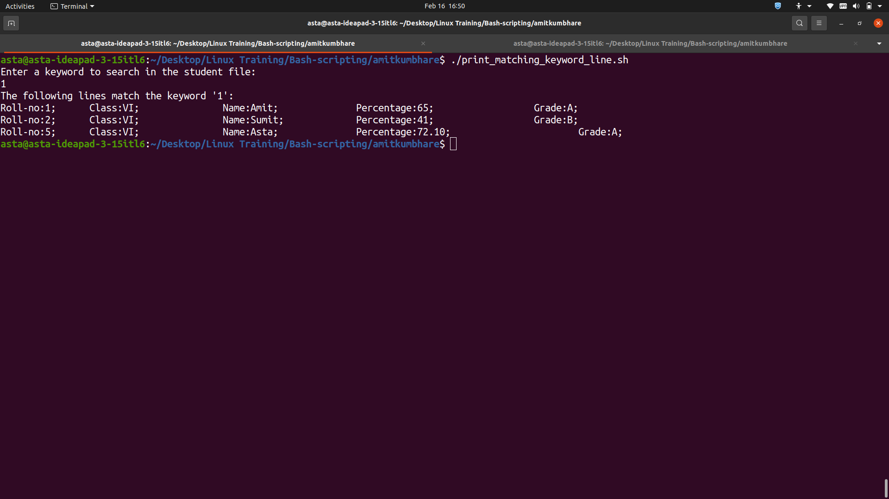

Search Student File
#!/bin/bash
echo "Enter a keyword to search in the student file:"
read keyword
if grep -q "$keyword" student
then
echo "The following lines match the keyword '$keyword':"
grep "$keyword" student
else
echo "No match found for the keyword '$keyword'."
fi
The output of the script is displayed in the terminal.

Explanation:
- This script prompts the user to enter a keyword to search in the student file.
- It then uses the grep command to search for the keyword in the file.
- The -q option is used to perform a quiet search (i.e., the command does not output any matching lines). Instead, the if statement checks the exit status of the grep command to determine if a match was found. If a match was found, it prints the matching lines to the console.
- If no match was found, it prints a message indicating that no match was found.